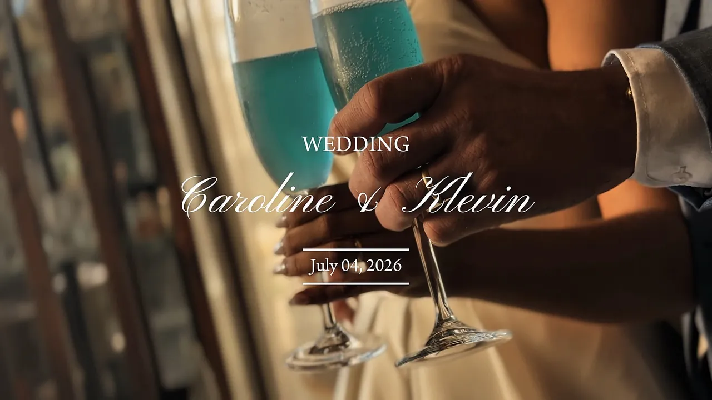
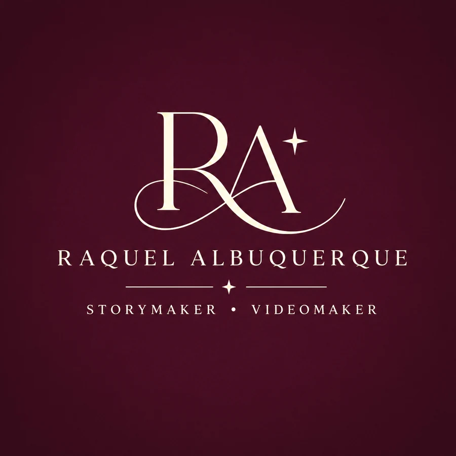

Histórias que merecem ser vistas.
Crio filmes e conteúdos audiovisuais que traduzem momentos, marcas e experiências em imagens com intenção, sensibilidade e identidade.

Uma história.
Meu olhar em movimento.
Uma seleção de projetos que revela diferentes formas de contar histórias. Escolha uma categoria e assista.

Prazer, sou a Raquel.
Sou storymaker e videomaker, e acredito que uma boa produção vai além de registrar: ela transmite sensações, valoriza detalhes e aproxima pessoas de histórias e marcas.
Atuo com planejamento, direção, captação e edição, criando produções audiovisuais para eventos, empresas e marcas que desejam comunicar com personalidade.
Um processo pensado
em cada detalhe.
Organização e intenção em cada etapa para que o resultado final esteja alinhado à história ou à marca.
Planejamento
Entendimento do objetivo, alinhamento de referências e definição da direção criativa.
Captação
Registro dos momentos, detalhes e cenas que dão personalidade ao projeto.
Edição e entrega
Montagem, ritmo, acabamento visual e entrega final de acordo com a proposta aprovada.
Vamos contar a sua próxima história?
Me conte o que você está planejando. Será um prazer entender a sua ideia e pensar na melhor forma de transformá-la em audiovisual.